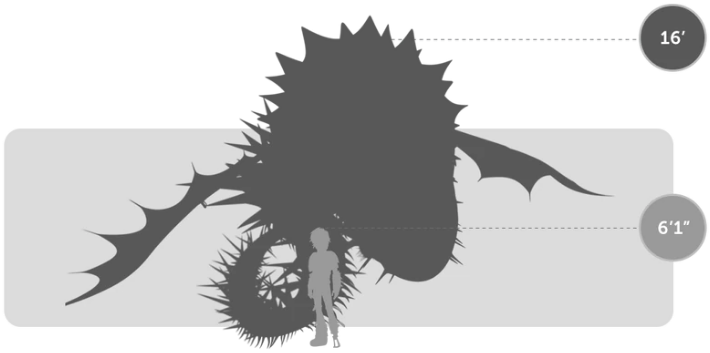
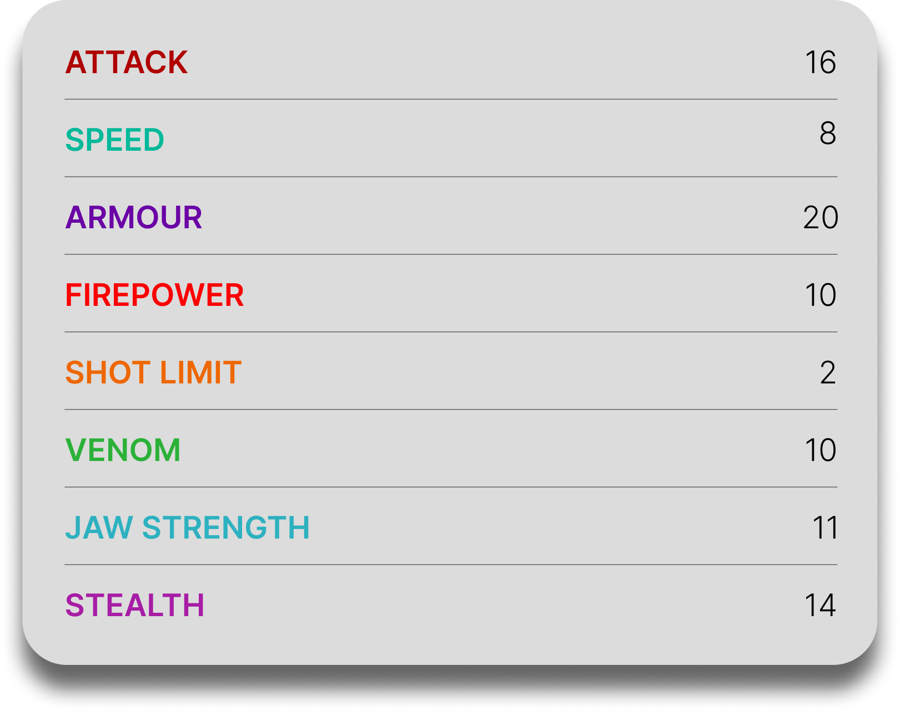

Screaming Death
General Overview
The Screaming Death is a gigantic dragon belonging to the Boulder Class. It is a heavily mutated, albino variant of the Whispering Death and is considered one of the most destructive dragons in the franchise. Known for its enormous size, terrifying roar, and overwhelming firepower, the Screaming Death is capable of tearing through islands, tunneling through solid ground, and dominating entire areas through fear and brute force.


Physical Appearance
- Body & Color: It has a long, massive serpentine body and is distinguished by its pure white coloration, making it stand out from the darker Whispering Death.
- Head & Face: Its head is larger and more heavily built, with blood-red eyes and a huge circular mouth lined with multiple rows of teeth.
- Appendages: Like the Whispering Death, it lacks legs and relies on its elongated body and small wings positioned near its head for movement.
- Wings & Tail: Its wings are relatively small compared to its body, while its enlarged tail and long frame help it maintain balance and power during movement.
Abilities and Combat
- Explosive Fireballs: It shoots large, explosive fireballs in rapid succession, giving it devastating ranged attack power.
- Fire Rings: It can breathe concentric rings of fire shaped like its round mouth, similar to the Whispering Death.
- Spine Shot: It can launch large spines from any part of its body as dangerous projectiles.
- Sonic Roar: Its powerful scream can intimidate enemies and even exert a degree of control over other dragons.
- Tunneling: Its massive body allows it to burrow through the ground and erupt from below with destructive force.
- Overwhelming Strength: Its immense size and weight allow it to smash through rock formations, structures, and entire landscapes with ease.
Behavior and Personality
- Intelligence: It shows strong instinctive intelligence and is capable of recognizing commands, threats, and familiar dragons.
- Temperament: Screaming Deaths are extremely aggressive, destructive, and difficult to control.
- Behavior: They attack with overwhelming force, often causing chaos on a massive scale and destroying whatever stands in their way.
- Social Traits: Despite their violent nature, they can show attachment and obedience to their mother, and they may also influence or lead other dragons through their roar.
- Diet: Their known diet includes fireweed, fish, mutton, flowers, yak, and sheep.